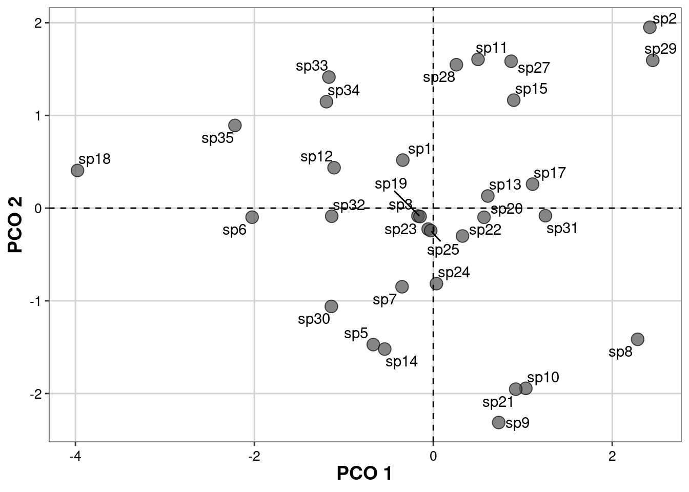
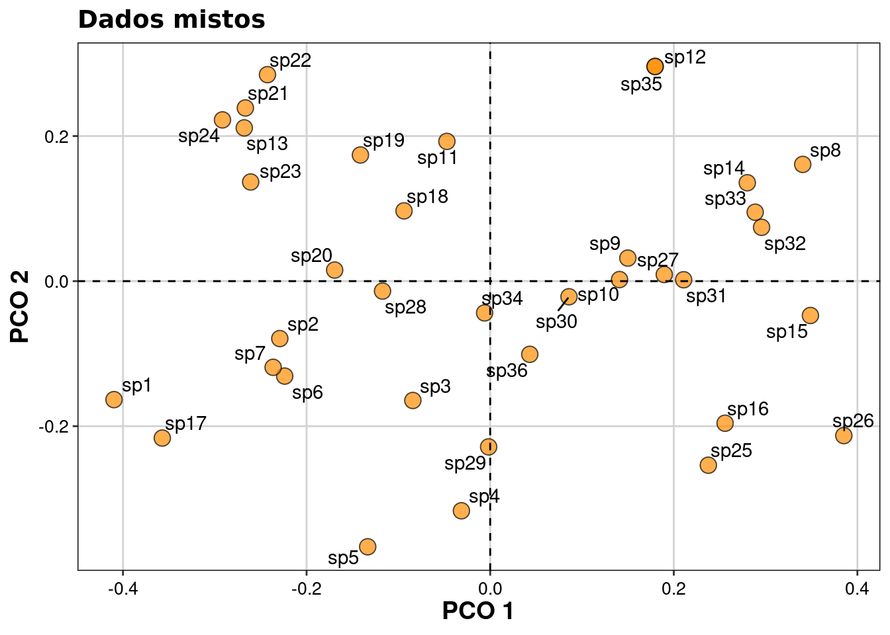
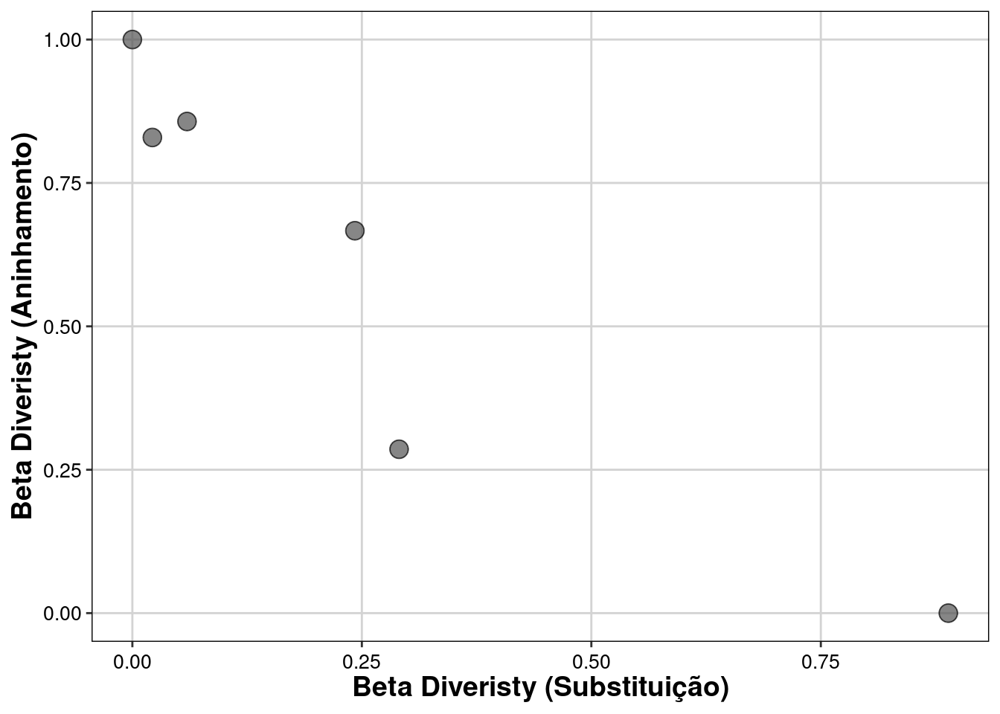

Capítulo 14 Diversidade Funcional
Pré-requisitos do capítulo
## Pacotes
library(FD)
library(ade4)
library(ecodados)
library(gridExtra)
library(ggplot2)
library(ggrepel)
library(tidyverse)
library(picante)
library(vegan)
library(SYNCSA)
library(GGally)
library(FD)
library(betapart)
library(nlme)
library(ape)
library(TPD)
library(cati)
library(kableExtra)
## Dados e funções necessárias
comun_fren_dat <- ecodados::fundiv_frenette2012a_comu
ambie_fren_dat <- ecodados::fundiv_frenette2012a_amb
trait_fren_dat <- ecodados::fundiv_frenette2012a_trait
trait_dat <- ecodados::fundiv_barbaro2009a_trait
comun_dat <- ecodados::fundiv_barbaro2009a_comu
ambie_dat <- ecodados::fundiv_barbaro2009a_amb
trait_baselga <- ecodados::trait_baselga
comm_baselga <- ecodados::comm_baselga
anuros_comm <- ecodados::anuros_comm
traits <- ecodados::traits
env <- ecodados::env
# ecodados::wITV # funtion: wITV14.1 Aspectos teóricos
Até a década de 1990, a teoria ecológica investigava basicamente quais processos determinavam a abundância e riqueza de espécies no espaço e tempo. As décadas de 1980 e 1990 foram marcadas por intensos debates sobre as regras de montagem de comunidades e como interações e filtros ambientais determinavam a coexistência de espécies (Strong et al. 1984). Porém, a década 2000 foi marcada pelo uso mais explícito da características das espécies como uma variável fundamental tanto para explicar como a distribuição dos organismos seria afetada pelo ambiente, quanto para entender como tais espécies afetariam o ecossistema (Dı́az and Cabido 2001; Brian J. McGill et al. 2006). O primeiro estudo que utilizou o termo Diversidade Funcional foi publicado por Williams (1967), que comparou espécies de naúplios filogenéticamente relacionadas e demonstrou que elas possuem alta plasticidade funcional que favorecem ampla variação de comportamentos e, desse modo, permitem que sejam espécies generalistas em ambientes em contante mudança. A unidade básica desses estudos, o atributo funcional (do inglês “functional trait”), é definido como uma propriedade mensurável dos organismos (geralmente em nível individual) que represente características morfológicas, fisiológicas ou fenológicas que afetam a aptidão alterando aspectos do crescimento, reprodução e sobrevivência (Violle et al. 2007). Mais especificamente, o atributo funcional pode ser divido em atributo efeito (i.e., atributos do organismo que afetam condições ambientais ou propriedades do ecossistema) e resposta (i.e., atributos do organismo que variam em resposta a condições ambientais) (Violle et al. 2007).
Dessa forma, as medidas de diversidade passam a ser representadas não somente por diferenças no número e na quantidade de espécies, mas pelas diferenças e/ou semelhanças dos atributos funcionais das espécies dentro e entre localidades. Assim, a variação no grau de expressão de diferentes atributos funcionais entre diferentes populações, comunidades ou ecossistemas é definida como Diversidade Funcional (sensu Garnier, Navas, and Grigulis 2015). Porém, a diversidade funcional não deve ser usada como medida única, uma vez que tais diferenças entre os atributos funcionais pode ser medida a partir da abundância relativa, riqueza e variação dos atributos funcionais. Desse modo, podemos dividir a diversidade funcional em três diferentes medidas: (1) riqueza funcional, (2) divergência funcional, e (3) regularidade funcional (Villéger, Mason, and Mouillot 2008). Existem dezenas de métricas que calculam cada uma dessas dimensões da diversidadade funcional, mas se destacam aquelas baseadas em dendrograma (e.g., FD: Petchey and Gaston 2002) ou em medidas de distância (e.g., Villéger, Mason, and Mouillot 2008). Assim como a diversidade taxonômica 12, a diversidade funcional pode ser medida em componentes alfa e beta. A seguir, apresentamos diferentes maneiras de calcular a distância entre localidades tendo como base os atributos funcionais das espécies e, além disso, demonstramos como calcular algumas das métricas de diversidade (alfa e beta) funcional mais usadas em ecologia. A parte final deste capítulo apresenta dois exemplos de como podemos testar hipóteses ecológicas comparando a diversidade funcional alfa e beta.
14.2 Definindo a dis(similaridade) entre espécies
Definir o quão diferente ou semelhante são duas espécies que ocorrem em uma determinada localidade é a base para calcular a diversidade alfa e beta funcional. Para isso, é fundamental ter em mente que os atributos funcionais podem ser de vários tipos como, por exemplo, contínuo (e.g., tamanho corporal em centímetro), categórico (e.g., guilda: frugívoro, detritívoro, etc.), ordinal (e.g., 1 para organismo até 5 cm, 2 para organismos entre 5 e 30 cm, e 3 para organismos maiores do que 30 cm), binários (e.g., presença ou ausência de espinho), entre outros (veja Tabela 1 em Gonçalves-Souza, Provete, et al. 2019). Por este motivo, a decisão do método de distância só será possível após o reconhecimento dos tipos de atributos funcionais escolhidos. Em linhas gerais, para variáveis contínuas a distância euclideana é a melhor opção, enquanto para os outros tipos de variáveis ou para conjuntos de atributos com mais de um tipo de variável, a distância de Gower geralmente deve ser a melhor opção (Sandrine Pavoine et al. 2009).
14.2.0.1 Exemplo prático
Exemplo1: variáveis contínuas
Vamos utilizar um conjunto de dados com atributos contínuos (e.g., área foliar específica, massa foliar seca) de 34 espécies de plantas em um gradiente de aridez (Frenette-Dussault et al. 2012). Diversas análises funcionais podem ser afetadas por valores extremos ou pela diferença de unidade/escala entre as variáveis utilizadas. Por este motivo, é importante padronizar a matriz de atributos com média 0 e desvio padrão 1. Esta padronização é necessária tanto para fazer uma PCA como para PCoA 9.
Pergunta
Quais são as espécies de plantas mais semelhantes? (Neste caso, sem predição, pois representa uma avaliação exploratória com as características funcionais das espécies)
Variáveis
- Dependentes: atributos funcionais (matriz de atributos contínuos por espécie:
trait_fren_dat)
## 1. Padronização dos dados
trait_pad <- decostand(trait_fren_dat, "standardize")
euclid_dis <- vegdist(trait_pad, "euclidean")
## 2. PCoA
# Resultados são idênticos aos resultados de uma PCA.
pcoa_traits_cont <- pcoa(euclid_dis, correction="cailliez")
## 3. Exportandos dados para gráfico
# Ao usar '[,1:2]' você irá selecionar os dois primeiros eixos.
eixos_cont <- as.data.frame(pcoa_traits_cont$vectors[,1:2])
## 4. Gráfico de ordenação
eixos_cont %>%
ggplot(aes(x=Axis.1, y=Axis.2)) +
geom_point(pch=21, size=4, color = "black", alpha = 0.7, fill="#525252") +
geom_text_repel(aes(Axis.1, Axis.2, label = rownames(eixos_cont))) +
xlab("PCO 1") + ylab("PCO 2") +
theme(axis.title.x = element_text(face="bold", size=14),
axis.text.x = element_text(vjust=0.5, size=12)) +
theme(axis.title.y = element_text(face="bold", size=14),
axis.text.y = element_text(vjust=0.5, size=12)) +
geom_hline(yintercept = 0, linetype=2) +
geom_vline(xintercept = 0, linetype=2)+
theme(legend.position = "top", legend.title=element_blank()) +
tema_livro()-> plot_trait_cont
plot_trait_cont
Exemplo 2: variáveis categóricas
Ao contrário dos dados contínuos, para dados categóricos não é possível utilizar PCA. No próximo exemplo, utilizamos atributos funcionais de besouros distribuídos na Europa (Barbaro and Van Halder 2009). Esses dados são categóricos e incluem atributos como período de atividade (noturno, diurno, dioturno), tendência da população na europa (estável, aumentando, diminuíndo), entre outros.
Pergunta:
Quais são as espécies de besouros mais semelhantes? (Neste caso, sem predição, pois representa uma avaliação exploratória com as características funcionais das espécies)
Variáveis
- Dependentes: atributos funcionais (matriz de atributos categóricos por espécie:
trait_dat)
# 1. Selecionar somente os atributos categóricos
trait_dat %>%
dplyr::select_if(is.character) -> trait_cat
# 2. Calcular a distância de Gower
dist_categ <- gowdis(trait_cat)
# 3. PCoA da matriz de distância funcional (Gower)
pcoa_traits_cat <- pcoa(dist_categ, correction="cailliez")
# 4. Exportar dados (escores) para ggiplot
eixos_cat <- as.data.frame(pcoa_traits_cat$vectors[,1:2]) # Selecionar os dois primeiros eixos
# 5. Gráfico de ordenação
eixos_cat %>%
ggplot(aes(x=Axis.1, y=Axis.2)) +
geom_point(pch=21, size=4, alpha = 0.7, color = "black", fill="cyan4") +
geom_text_repel(aes(Axis.1, Axis.2, label = rownames(eixos_cat))) +
xlab("PCO 1") + ylab("PCO 2") +
theme(axis.title.x = element_text(face="bold", size=14),
axis.text.x = element_text(vjust=0.5, size=12)) +
theme(axis.title.y = element_text(face="bold", size=14),
axis.text.y = element_text(vjust=0.5, size=12)) +
geom_hline(yintercept = 0, linetype=2) +
geom_vline(xintercept = 0, linetype=2)+
theme(legend.position = "top", legend.title=element_blank()) +
tema_livro() + ggtitle("Dados categóricos")-> plot_trait_cat
plot_trait_cat
Exemplo 3: variáveis mistas
Em casos mais complexos, a pesquisa inclui diversos atributos funcionais com natureza diferente, como atributos contínuos, categóricos, ordinais, circulares, entre outros. Desse modo, é possível utilizar medidas como Gower (FD::gowdis). Porém, existe uma alternativa mais apropriada que generalizou coeficiente de Gower para tratar cada conjunto de variáveis de acordo com sua natureza (Sandrine Pavoine et al. 2009). Vamos usar o mesmo conjunto de dados que foram considerados no exemplo anterior. Porém, ao invés de utilizar somente as variáveis categóricas, usaremos todas elas. O primeiro passo é identificar para o programa as classes apropriadas para cada tipo de variável e, além disso, preparar os dados para a função ade4::dist.ktab.
Pergunta
Quais são as espécies de besouros mais semelhantes? (Neste caso, sem predição, pois representa uma avaliação exploratória com as características funcionais das espécies)
Variáveis
- Dependentes: atributos funcionais (matriz de atributos contínuos e categóricos por espécie:
trait_dat)
## 1. Verifique a classe de todos os traits e veja se estão de acordo com sua expectativa
trait_dat %>%
dplyr::summarise_all(class) %>%
tidyr::gather(variable, class)
#> variable class
#> 1 trend character
#> 2 redlist character
#> 3 regio integer
#> 4 biog character
#> 5 activ character
#> 6 diet character
#> 7 winter character
#> 8 color character
#> 9 breed character
#> 10 body integer
#> 11 wing character
#> 12 period character
## 2. Neste exemplo, algumas variáveis que são ordinais (regio e body)
# foram reconhecidas como numéricas ou categóricas.
trait_dat$regio <- as.ordered(trait_dat$regio)
trait_dat$body <- as.ordered(trait_dat$body)
## 3. Combinar cada conjunto de atributos de acordo com sua natureza em um
# data.frame separado.
# 3.1. Categóricos.
trait_categ <- cbind.data.frame(trend=trait_dat$trend, redlist=trait_dat$redlist, biog=trait_dat$biog, activ=trait_dat$activ, diet=trait_dat$diet, winter=trait_dat$winter,color=trait_dat$color, breed=trait_dat$breed,wing=trait_dat$wing, period=trait_dat$period)
# 3.2 Ordinais.
trait_ord <- cbind.data.frame(regio=trait_dat$regio, body=trait_dat$body)
rownames(trait_categ) <- rownames(trait_dat)
rownames(trait_ord) <- rownames(trait_dat)
# Agora, combinar os dois data.frames em uma lista chamada "ktab".
ktab_list <- ktab.list.df(list(trait_categ, trait_ord))
# Por fim, calcular a distância funcional entre as espécies.
# Em "type", a letra "N" indica variável categórica (ou nominal),
# enquanto a letra "O" indica variável ordinal.
dist_mist <- dist.ktab(ktab_list, type= c("N", "O"))
## Visualize os dados com uma PCoA (\@ref(cap9))
pcoa_traits_mist <- pcoa(dist_mist, correction="cailliez")
eixos_mist <- as.data.frame(pcoa_traits_mist$vectors[,1:2])
eixos_mist %>%
ggplot(aes(x=Axis.1, y=Axis.2)) +
geom_point(pch=21, size=4, alpha = 0.7, color = "black", fill="darkorange") +
geom_text_repel(aes(Axis.1, Axis.2, label = rownames(eixos_mist)))+
xlab("PCO 1") + ylab("PCO 2") +
theme(axis.title.x = element_text(face="bold", size=14),
axis.text.x = element_text(vjust=0.5, size=12)) +
theme(axis.title.y = element_text(face="bold", size=14),
axis.text.y = element_text(vjust=0.5, size=12)) +
geom_hline(yintercept = 0, linetype=2) +
geom_vline(xintercept = 0, linetype=2)+
theme(legend.position = "top", legend.title=element_blank()) +
tema_livro() + ggtitle("Dados mistos") -> plot_trait_mist
plot_trait_mist
Podemos combinar os dois gráficos (baseado em variáveis categóricas e em variáveis mistas) para comparar as duas medidas de distância, uma somente com dados categóricos (FD::gower) e uma com dados categóricos e ordinais (ade4::dist.ktab).
grid.arrange(plot_trait_cat, plot_trait_mist, ncol=2)
14.3 Métricas de diversidade funcional (alpha)
14.3.1 Riqueza funcional
A riqueza funcional mede a quantidade de espaço funcional preenchido pela espécies de uma comunidade (Mason and Mouillot 2013). A estimativa desse espaço pode ser calculada usando dengrogramas (Petchey and Gaston 2002) ou através do método Convex Hull (Cornwell, Schwilk, and Ackerly 2006) que dão origem, respectivamente, as duas métricas mais usadas: (1) Diversidade Funcional (FD) e (2) Riqueza Funcional (FRic). Os índices de riqueza funcional geralmente são usados como indicadores do espaço de nicho que é potencialmente usado ou não (Schleuter et al. 2010).
14.3.1.1 Exemplo prático
Explicação dos dados
Os dados utilizados neste exemplo são os mesmos do exemplo com dados mistos, i.e., categóricos e contínuos (objeto dist_mist).
Pergunta
Qual a relação entre riqueza de espécies e diversidade funcional? Todos os índices são correlacionados com a riqueza?
Variáveis
- Dependentes: atributos funcionais e composição de espécies para cálculo da diversidade funcional e riqueza em cada parcela.
## Estrutura dos dados
# matriz de distância: distância entre as seis primeiras espécies
as.matrix(dist_mist)[1:6, 1:6]
#> sp1 sp2 sp3 sp4 sp5 sp6
#> sp1 0.0000000 0.5000000 0.7107801 0.7771900 0.6107116 0.5041691
#> sp2 0.5000000 0.0000000 0.6808389 0.8538292 0.7345988 0.6487320
#> sp3 0.7107801 0.6808389 0.0000000 0.7179711 0.7381353 0.6527339
#> sp4 0.7771900 0.8538292 0.7179711 0.0000000 0.5106682 0.6522593
#> sp5 0.6107116 0.7345988 0.7381353 0.5106682 0.0000000 0.5177440
#> sp6 0.5041691 0.6487320 0.6527339 0.6522593 0.5177440 0.0000000
# composição de espécies: seis primeiras espécies nas seis primeiras localidades
head(comun_dat)[1:6, 1:6]
#> sp1 sp2 sp3 sp4 sp5 sp6
#> 3 0 19 2 0 0 0
#> 4 0 4 0 0 0 0
#> 6 1 58 2 0 0 0
#> 7 1 0 0 0 0 0
#> 9 3 0 0 0 0 0
#> 10 3 15 0 0 0 0
## Antes de calcular as métricas de diversidade funcional, vamos calcular
# a riqueza de espécies com intuito de comparação entre métricas.
richness <- dbFD(dist_mist, comun_dat)$nbsp
#> FRic: Dimensionality reduction was required. The last 17 PCoA axes (out of 19 in total) were removed.
#> FRic: Quality of the reduced-space representation = 0.3243851
#> CWM: When 'x' is a distance matrix, CWM cannot be calculated.
head(richness)
#> 3 4 6 7 9 10
#> 12 3 7 7 4 7
## É preciso definir uma distância apropriada (veja descrição anterior) para os cálculos
# abaixo
# O índice "Functional Richness" só funciona para comunidades com 3 ou mais espécies.
# Caso você tenha comunidades com 1 ou 2 espécies, o valor será NA.
fric <- dbFD(dist_mist, comun_dat)$FRic
#> FRic: Dimensionality reduction was required. The last 17 PCoA axes (out of 19 in total) were removed.
#> FRic: Quality of the reduced-space representation = 0.3243851
#> CWM: When 'x' is a distance matrix, CWM cannot be calculated.
head(fric)
#> 3 4 6 7 9 10
#> 0.226236923 0.009033539 0.158760885 0.158529234 0.014290140 0.200075112
## Functional Diversity
# Passo 1: análise de agrupamento para criar o dendrograma.
dend <- hclust(dist_mist, "average")
# Passo 2: transformar o dengrograma em um arquivo da classe phylo.
tree_dend <-as.phylo(dend)
# Passo 3: calcular o valor da diversidade funcional.
FD <- pd(comun_dat, tree_dend)$PD
head(FD)
#> [1] 3.590053 1.115574 2.255337 2.356478 1.472314 2.43032914.3.2 Divergência funcional
A divergência funcional é uma medida que descreve a irregularidade na distribuição dos valores dos atributos no volume do espaço funcional ocupado por todas as espécies de uma certa comunidade (Garnier, Navas, and Grigulis 2015). Para obter os valores de divergência, o espaço funcional é calculado através do método Convex Hull (Functional Divergence) ou do espaço multidimensional calculado com um PCoA (Functional Dispersion). Nos dois casos, o valor da métrica representa a distância média das espécies para o centro de gravidade ou centroide do espaço funcional, ponderado pela abundância relativa das espécies (Villéger, Mason, and Mouillot 2008; Laliberté and Legendre 2010). Desse modo, a divergência funcional é uma medida que calcula o grau de diferenciação em que a distribuição da abundância maximiza a divergência entre entre os atributos funcionais (Mason and Mouillot 2013). Em geral, estudos que usam esses índices buscam entender o grau de diferenciação de recursos de espécies que coexistem em uma comunidade (Garnier, Navas, and Grigulis 2015).
## Aqui, iremos utilizar a matriz de distância obtida dos dados
# trait_dat (variáveis categóricas e ordinais) e nomeada como dist_mist.
## O índice "Functional Divergence" só é calculado para comunidades com 3 ou mais espécies
# Caso você tenha comunidades com 1 ou 2 espécies, a análise irá retornar o valor "NA"
fdiv <- dbFD(dist_mist, comun_dat)$FDiv
#> FRic: Dimensionality reduction was required. The last 17 PCoA axes (out of 19 in total) were removed.
#> FRic: Quality of the reduced-space representation = 0.3243851
#> CWM: When 'x' is a distance matrix, CWM cannot be calculated.
head(fdiv)
#> 3 4 6 7 9 10
#> 0.9692023 0.8838557 0.4082808 0.9147644 0.9010790 0.6982640
# O índice "Functional Dispersion" atribui valor 0 para comunidades com 1 ou 2 espécies
fdis <- dbFD(dist_mist, comun_dat)$FDis
#> FRic: Dimensionality reduction was required. The last 17 PCoA axes (out of 19 in total) were removed.
#> FRic: Quality of the reduced-space representation = 0.3243851
#> CWM: When 'x' is a distance matrix, CWM cannot be calculated.
head(fdis)
#> 3 4 6 7 9 10
#> 0.2977975 0.3203602 0.2218237 0.3261248 0.3683898 0.391053014.3.3 Regularidade funcional
A regularidade funcional (do inglês Functional Evenness) mede o quão regular é a distribuição da abundância dos valores dos atributos funcionais no espaço funcional. Diferente dos outros métodos, a versão multidimensional deste índice utiliza um método chamado Minimum Spanning Tree (MST) para conectar todas espécies no espaço funcional. A distância par-a-par das espécies na MST é ponderada pela abundância relativa das espécies e, desse modo, o valor final da regularidade funcional (FEve) vai variar de 0 (máxima irregularidade da distribuição da abundância ou distância funcional das espécies) a 1 (máxima regularidade).
## Aqui, iremos utilizar a matriz de distância obtida dos dados trait_dat (variáveis categóricas e ordinais) e nomeada como dist_mist
## O índice "Functional evenness" só funciona para comunidades com 3 ou mais espécies
# Caso você tenha comunidades com 1 ou 2 espécies, a análise irá retornar o valor NA
feve <- dbFD(dist_mist, comun_dat)$FEve
#> FRic: Dimensionality reduction was required. The last 17 PCoA axes (out of 19 in total) were removed.
#> FRic: Quality of the reduced-space representation = 0.3243851
#> CWM: When 'x' is a distance matrix, CWM cannot be calculated.
head(feve)
#> 3 4 6 7 9 10
#> 0.4054808 0.5587917 0.5406140 0.6974712 0.9575697 0.6297941
## Você pode criar uma tabela com os resultados de todas as métricas
metricas <- data.frame(richness=richness,
FD_gp = FD,
fric = fric,
fdiv = fdiv,
fdis = fdis,
feve = feve)
head(metricas)
#> richness FD_gp fric fdiv fdis feve
#> 3 12 3.590053 0.226236923 0.9692023 0.2977975 0.4054808
#> 4 3 1.115574 0.009033539 0.8838557 0.3203602 0.5587917
#> 6 7 2.255337 0.158760885 0.4082808 0.2218237 0.5406140
#> 7 7 2.356478 0.158529234 0.9147644 0.3261248 0.6974712
#> 9 4 1.472314 0.014290140 0.9010790 0.3683898 0.9575697
#> 10 7 2.430329 0.200075112 0.6982640 0.3910530 0.6297941
### Gráfico para comparar o comportamento das métricas
ggpairs(metricas)
Os resultados indicam que a Diversidade Funcional de Petchey & Gaston (r = 0.985) e a riqueza funcional (r = 0.813) são altamente correlacionadas com a riqueza de espécies. Porém, a divergência funcional, regularidade funcional e dispersão funcional não estão correlacionadas com a riqueza de espécies.
A figura obtida com o comando
ggpairs(metricas)representa uma matriz de correlação comparando cada par de variáveis (neste caso, os índices de diversidade). No lado esquerdo da figura (abaixo da diagonal) são representados scatterplots 6, a no lado direito (acima da diagonal) pode-se encontrar os valores das correlações (r) entre os pares comparados. No caso das correlações, quanto mais próximo de +1 ou -1, mais forte é a relação entre essas variáveis do par comparado. O gráfico de linhas na diagonal demonstra a densidade de cada variáveis individualmente 6.
14.4 Métricas de diversidade funcional (beta)
Assim como na diversidade beta taxonômica 12, a diversidade beta funcional é uma medida que compara a composição (e a variação na composição) de atributos funcionais das espécies entre duas ou mais localidades. Porém, assim como na medida tradicional taxonômica (como Jaccard ou Sorensen), diferenças na diversidade beta podem ser geradas pela mudança na identidade das espécies (ou do atributo) ou na riqueza de espécies (ou de atributos) entre duas localidades (Figura 1). Desse modo, é possível particionar a diversidade beta funcional em aninhamento e substituição (do inglês turnover) 12. Além disso, os cálculos da diversidade beta funcional podem ser realizados par-a-par (functional.beta.pair) ou para a comparações de múltiplas localidades (funcional.beta.multi).

Figura 1. Partição da diversidade beta taxonômica (A) e funcional (B). Os três cenários apresentados tanto para a diversidade beta taxonômica como funcional representam, respectivamente, diversidade beta explicada somente por substituição, aninhamento e uma combinação dos dois.
Exemplo 4
Os dados no exemplo a seguir utilizam somente a informação de presença (1) ou ausência (0) das espécies nas localidades. Neste exemplo hipotético criado por Baselga et al. (2021), foram amostradas 11 espécies (sp1-sp11) em quatro localidades (A-D). Para cada espécie, criamos dois atributos contínuos hipotéticos (trait1 e trait2).
Pergunta
Qual a contribuição relativa do aninhamento e substituição para a diversidade beta?
Variáveis
- Dependentes: atributos funcionais e composição de espécies.
## Partição da Diversidade beta (Método Baselga)
fun_beta_multi <- functional.beta.multi(x = comm_baselga, trait=trait_baselga, index="jaccard")
fun_beta_multi
#> $funct.beta.JTU
#> [1] 0.7101449
#>
#> $funct.beta.JNE
#> [1] 0.1509662
#>
#> $funct.beta.JAC
#> [1] 0.8611111
## Partição da Diversidade beta (Método Baselga)
fun_beta <- functional.beta.pair(x = comm_baselga, trait=trait_baselga, index="jaccard")
# Os comandos abaixo permitem extrair a matriz de distância (par-a-par) com a partição em substituição e nestedness
fun_turnover <- fun_beta$funct.beta.jne
fun_nestedness <- fun_beta$funct.beta.jtu
fun_jaccard <- fun_beta$funct.beta.jac
# Gráfico de comparação do substituição e aninhamento
dat_betapart <- data.frame(turnover=as.numeric(fun_turnover), nested = as.numeric(fun_nestedness))
dat_betapart %>%
ggplot(aes(x=turnover, y=nested)) +
geom_point(pch=21, size=4, alpha = 0.7, color = "black", fill="#525252") +
xlab("Beta Diveristy (Substituição)") +
ylab("Beta Diveristy (Aninhamento)") +
theme(axis.title.x = element_text(face="bold", size=14),
axis.text.x = element_text(vjust=0.5, size=12)) +
theme(axis.title.y = element_text(face="bold", size=14),
axis.text.y = element_text(vjust=0.5, size=12)) +
theme(legend.position = "top", legend.title=element_blank()) +
tema_livro() -> plot_betapart
plot_betapart
Os resultados da análise de partição (
fun_beta_multi) indicam que 82,5% (0,710 / 0,861) da variação na diversidade beta é explicada pelo componente substituição, enquanto 17,5% (0,151 / 0,861) pelo componente aninhamento. As matrizes de distância obtidas na análise par a par pode ser utilizadas para testar, a posteriori, a relação entre gradientes ambientais e diversidade beta funcional (mais detalhes abaixo).
14.4.1 Composição Funcional
As medidas de diversidade beta funcional apresentadas acima fornecem matrizes de distância com comparações par-a-par de localidades em termos da composição de atributos funcionais. Porém, muitas vezes o pesquisador quer medir o “atributo médio” da comunidade para investigar, por exemplo, se um determinado gradiente ambiental afeta a expressão (em termos de abundância ou densidade) de dado atributo funcional. Em geral, a medida utilizada é o CWM (do inglês Community Wegihed Means). O CWM é basicamente uma média ponderada de um determinado atributo (coluna m na matriz T) em relação a abundância de todas as espécies que ocorrem na localidade n (matrix X). Para calcular no R a função FD::functcomp usa somente as duas matrizes (T e X). Os leitores que pretendem usar essas métricas devem ler críticas em Peres-Neto et al. (2017).
## Matriz T
head(trait_baselga)
#> Trait.1 Trait.2
#> sp1 1 1
#> sp2 1 2
#> sp3 1 4
#> sp4 2 1
#> sp5 2 2
#> sp6 3 3
## Matriz X
head(comm_baselga)
#> sp1 sp2 sp3 sp4 sp5 sp6 sp7 sp8 sp9 sp10 sp11
#> A 1 1 0 1 1 0 0 0 0 0 0
#> B 1 0 1 0 0 0 0 1 1 0 0
#> C 0 0 0 0 0 1 1 0 0 1 1
#> D 0 1 0 1 0 0 1 0 1 0 0
## Função functcomp calcula o cwm para combinar as matrizes T e X
cwm_ex <- functcomp(trait_baselga, as.matrix(comm_baselga))
cwm_ex
#> Trait.1 Trait.2
#> A 1.5 1.5
#> B 2.5 2.5
#> C 4.0 4.0
#> D 2.5 3.0A matriz resultante cwm_es é formada pelas localidades (linhas) e os atributos “médios” (colunas) nestas localidades. Essa matriz pode ser utilizada em diversas análises como dbRDA, RDA ou RDA parcial 9. Na sequência, vamos utilizar testes de hipóteses para entender como podemos calcular as diversidades funcional alfa e beta com outros testes estatísticos apresentados neste livro.
Exemplo 5
Neste exemplo, usaremos novamente os dados de 34 espécies de plantas (Frenette-Dussault et al. 2012), mas agora vamos testar o efeito de um gradiente de aridez sobre a diversidade alfa funcional.
Pergunta
O gradiente de aridez influencia a divergência e regularidade funcional de plantas?
Predições
Predição 1: locais mais áridos possuem menor divergência funcional de plantas (métrica escolhida: FDis)
Predição 2: locais mais úmidos possuem menor regularidade funcional de plantas (métrica escolhida: FEve)
Variáveis
Preditora: gradiente de aridez (matriz de variáveis ambientais por localidade:
ambie_fren_dat)Dependentes: composição de espécies (matriz de espécies por localidade:
comun_fren_dat) e atributos funcionais (matriz de atributos contínuos por espécie:trait_fren_dat)
## Passo 1: calcular a distância funcional
trait_pad <- decostand(trait_fren_dat, "standardize")
euclid_dis <- vegdist(trait_pad, "euclidean")
## Passo 2: calcular a Divergência funcional (FDis) e Regularidade Funcional (FEve)
fdis <- dbFD(euclid_dis, comun_fren_dat)$FDis# Fdis=0 em locais com somente uma espécie
#> FRic: No dimensionality reduction was required. All 5 PCoA axes were kept as 'traits'.
#> CWM: When 'x' is a distance matrix, CWM cannot be calculated.
feve <- dbFD(euclid_dis, comun_fren_dat)$FEve
#> FRic: No dimensionality reduction was required. All 5 PCoA axes were kept as 'traits'.
#> CWM: When 'x' is a distance matrix, CWM cannot be calculated.
## Passo 3: Utilizar um modelo linear para comparar o efeito da aridez sobre FDis (predição 1) e FEve (predição 2)
# Combinar dados em um data.frame.
lm_dat <- data.frame(aridez = ambie_fren_dat$Aridity, fdis = fdis, feve = feve)
# Modelo 1
mod1 <- lm(fdis ~ aridez, data = lm_dat)
# conferir os pressupostos da análise
par(mfrow=c(2,2))
plot(mod1)
# Conclusão: a aridez não tem efeito sobre a divergência funcional
anova(mod1)
#> Analysis of Variance Table
#>
#> Response: fdis
#> Df Sum Sq Mean Sq F value Pr(>F)
#> aridez 1 0.2083 0.20834 0.9945 0.3241
#> Residuals 44 9.2179 0.20950
# Modelo 2
mod2 <- lm(feve ~ aridez, data = lm_dat)
# conferir os pressupostos da análise
par(mfrow=c(2,2))
plot(mod2)
# Conclusão: a aridez não tem efeito sobre a regularidade funcional
anova(mod2)
#> Analysis of Variance Table
#>
#> Response: feve
#> Df Sum Sq Mean Sq F value Pr(>F)
#> aridez 1 0.02098 0.020979 1.0447 0.3123
#> Residuals 44 0.88353 0.020080
## Passo 4: gráfico para visualizar os dois resultados
# Gráfico modelo 1.
lm_dat %>%
ggplot(aes(x=aridez, y=fdis)) +
geom_point(pch=21, size=4, alpha = 0.7, color = "black", fill="darkorange") +
xlab("Aridez") + ylab("Divergência Funcional (FDis)") +
theme(axis.title.x = element_text(face="bold", size=14),
axis.text.x = element_text(vjust=0.5, size=12)) +
theme(axis.title.y = element_text(face="bold", size=14),
axis.text.y = element_text(vjust=0.5, size=12)) +
theme(legend.position = "top", legend.title=element_blank())+
tema_livro() -> plot_pred1
# Gráfico modelo 2.
lm_dat %>%
ggplot(aes(x=aridez, y=feve)) +
geom_point(pch=21, size=4, alpha = 0.7, color = "black", fill="cyan4") +
xlab("Aridez") + ylab("Regularidade Funcional (FEve)") +
theme(axis.title.x = element_text(face="bold", size=14),
axis.text.x = element_text(vjust=0.5, size=12)) +
theme(axis.title.y = element_text(face="bold", size=14),
axis.text.y = element_text(vjust=0.5, size=12)) +
theme(legend.position = "top", legend.title=element_blank()) +
tema_livro() -> plot_pred2
## Visualização dos dois gráficos em um única janela
grid.arrange(plot_pred1, plot_pred2, ncol=2)


Os resultados dos modelos
anova(mod1)eanova(mod2)indicam que o gradiente de aridez não afeta a dispersão e regularidade funcional. Os detalhes para conferir os pressupostos das análise foram descritos no 7.
Exemplo 6
Agora, vamos utilizar novamente os dados de 34 espécies de plantas (Frenette-Dussault et al. 2012), mas agora para testar o efeito do pastejo sobre a diversidade beta funcional.
Pergunta: O pastejo determina a ocorrência de espécies de plantas com diferentes atributos funcionais ?
Predição * A composição funcional de plantas é diferente entre áreas com e sem pastejo?
Variáveis
* Preditora: áreas com e sem pastejo de gado (variável categórica com dois níveis: grazed e ungrazed: ambie_fren_dat)
- Dependentes: composição de espécies (matriz de espécies por localidade:
comun_fren_dat) e atributos funcionais (matriz de atributos contínuos por espécie:trait_fren_dat)
## Passo 1: CWM
cwm_fren <- functcomp(trait_pad, as.matrix(comun_fren_dat))
head(cwm_fren)
#> LA SLA LDMC LN15 LCC
#> 1 -0.2411700 -0.3485515 0.19745200 0.1874003 -0.5367368
#> 2 -0.3977371 0.2326622 -0.09093270 -0.2859777 0.1643190
#> 3 -0.1857134 0.2010756 -0.39877265 -0.1250643 -0.4304617
#> 4 -0.2284064 0.1604101 0.80496307 -0.3704253 0.7193853
#> 5 -0.1664790 0.3486956 0.02232213 -0.2041931 0.2051391
#> 6 -0.3258821 0.3664583 0.04996829 -0.3352572 0.4713089
## Passo 2: calcular a distância funcional
cwm_dis <- vegdist(cwm_fren, "euclidean")
## Passo 3: testar se a composição funcional varia entre as áreas com uma PERMANOVA
perman_fren <- adonis(cwm_fren ~ Grazing, data = ambie_fren_dat)
perman_fren
#>
#> Call:
#> adonis(formula = cwm_fren ~ Grazing, data = ambie_fren_dat)
#>
#> Permutation: free
#> Number of permutations: 999
#>
#> Terms added sequentially (first to last)
#>
#> Df SumsOfSqs MeanSqs F.Model R2 Pr(>F)
#> Grazing 1 -174.5 -174.46 -0.61591 -0.0142 0.547
#> Residuals 44 12463.0 283.25 1.0142
#> Total 45 12288.5 1.0000
## Passo 4: comparar a variação dentro de cada grupo com Betadisper
betad_fren <- betadisper(cwm_dis, ambie_fren_dat$Grazing)
permutest(betad_fren)
#>
#> Permutation test for homogeneity of multivariate dispersions
#> Permutation: free
#> Number of permutations: 999
#>
#> Response: Distances
#> Df Sum Sq Mean Sq F N.Perm Pr(>F)
#> Groups 1 0.0539 0.053858 0.1946 999 0.669
#> Residuals 44 12.1763 0.276735
## Passo 5: visualização com PCoA
plot(betad_fren)
Neste exemplo, os resultados perman_fren demonstram que a composição funcional de plantas não é afetada pelo pastejo (P > 0,05) e que a dispersão da composição (uma medida potencial de diversidade beta: Marti J. Anderson, Ellingsen, and McArdle 2006) de espécies também não muda entre áreas com ou sem pastejo (permutest(betad_fren)). A função betadisper deve ser sempre utilizada em conjunto com a PERMANOVA (adonis) para poder interpretar quais as fontes de variação na composição de espécies. Sendo assim, esta análise representa um método fundamental para comparar se o potencial efeito (quando houver) é fruto de diferença na composição de espécies (i.e., diferença na posição dos centróides entre dois ou mais grupos) ou na variação da composição de espécies entre os grupos (i.e., diferença na dispersão dos dados em relação aos centróides)9. Esta última informação, dispersão, é geralmente interpretada como uma analogia a homogeneidade de variâncias de uma ANOVA (i.e., teste de Levene). A hipótese nula do betadisper é que a dispersão dos grupos é homogênea (ou seja, o valor de probabilidade nos casos que existem dispersões homogêneas será maior do que 0,05). Porém, se esse valor for menor do que 0,05, você deve rejeitar a hipótese nula e concluir que as dispersões são heterogêneas. Os gráficos de PCoA são uma ferramenta poderosa para interpretar os resultados da PERMANOVA + Betadisper. Quanto mais diferente a composição de espécies entre dois ou mais grupos, mais distante devem ser os centroides desse grupo. Além disso, se as áreas dos polígonos que conectam todas as réplicas de cada grupo forem diferentes em tamanho (hipótese que será testada com o Betadisper), é possível também visualizar esta diferença. Em conclusão, para testar se diferenças de composição funcional existem entre dois ou mais grupos, será fundamental (1) comparar a variação da posição dos centróides (função adonis) e (2) a variação da dispersão da composição funcional entre os grupos (função betadisper).
14.5 Variação Intraspecífica
Os métodos discutidos anteriormente utilizam valores médios dos atributos das espécies para descrever a estrutura funcional da comunidade e interpretar as relações entre determinadas variáveis preditoras (como clima, por exemplo) com a diverisdade funcional. Porém, ao utilizar atributos médios estamos desconsiderando que a variação deste atributo dentro da espécie seja determinante para a resposta da espécie ao ambiente ou seu efeito sobre o ecossistema (Bolnick et al. 2011 ; Violle et al. 2012). Os estudos que usam dados médios para testar hipóteses em ecologia funcional argumentam que a variação dentro da espécie é menor do que a variação entre espécies e, desse modo, o ruído causado ao desconsiderar a variância do atributo dentro da espécies é desprezível. Porém, diversos estudos têm mostrado que esse argumento é frágil e que a inclusão da variação intraespecífica melhora nossa capacidade preditiva em ecologia funcional (Violle et al. 2012; Siefert et al. 2015). Um abordagem geralmente utilizada é a decomposição da variância do atributo em diferentes níveis de organização: (1) variação dentro da população da mesma espécie em uma mesma unidade amostral, (2) variação dentro das populações (independente da espécie) de uma comunidade em uma mesma unidade amostral, e (3) variação entre populações. Conhecida como estatística T, esta abordagem permite entender as fontes (intra ou interespecífica) de variação no atributos em diferentes escalas (Violle et al. 2012). Outro método que quantifica a variância explicada pela variabilidade intraespecífica, interespecífica e a covariância entre elas foi proposto por Leps et al. (2011). Este método permite calcular a contribuição da variação intraespecífica dentro e entre comunidades. Agora, vamos entender a contribuição da variação de um atributo dentro da espécie comparada à variação entre espécies.
Exemplo 7
Vamos utilizar os dados de 11 espécies de anuros associados com 26 poças no Parque Nacional Lagoa do Peixe (Dalmolin, Tozetti, and Pereira 2020). Atributos morfológicos foram coletados em todos os indivíduos coletados em cada poça. Desse modo, é possível comparar a variação morfológica entre indivíduos da mesma espécie e entre espécies diferentes. Além disso, é possível quantificar a contribuição da variação dentro e entre diferentes poças. No exemplo abaixo, criamos cinco atributos com nomes diferentes daqueles usados no artigo de Dalmolin et al. (2020). Em cada poça, os autores coletaram os seguintes dados das poças: (1) profundidade, (2) area, (3) distância entre poças, e (4) distância da poça para a floresta mais próxima.
Pergunta 1
Qual a contribuição da variação intraespecífica para a variação total dos atributos morfológicos de anuros?
Predição
- A alta plasticidade fenotípica de anuros indica alta contribuição da variação intraespecífica comparada a interespecífica.
Variáveis
Preditora: espécies (categórica).
Dependente: variação dos atributos morfológicos.
## Dados necessários
# Matriz de traits.
head(traits)
#> pond Species body_size biomass eye_size leg_size flatness
#> 1 DN1 Sp2 2.405 2.291 3.104 0.450 0.794
#> 2 DN1 Sp3 1.882 2.039 2.926 0.345 1.063
#> 3 DN1 Sp4 0.699 0.342 0.782 0.104 3.055
#> 4 DN1 Sp4 0.725 0.598 1.120 0.136 2.759
#> 5 DN1 Sp4 0.448 0.385 0.844 0.107 3.557
#> 6 DN1 Sp4 0.640 0.470 0.861 0.093 3.420
## Partição da variação intra e interespecífica
## Passo 1: Tamanho corporal
mod_body_size <- aov(body_size~Species, data = traits)
summary(mod_body_size)
#> Df Sum Sq Mean Sq F value Pr(>F)
#> Species 10 95.91 9.591 25.5 <2e-16 ***
#> Residuals 195 73.35 0.376
#> ---
#> Signif. codes: 0 '***' 0.001 '**' 0.01 '*' 0.05 '.' 0.1 ' ' 1
# Contribuição da variação intra-específica para o tamanho corporal.
itv_BS <- 100*(73.35 / (95.92+73.35))
itv_BS
#> [1] 43.33314
## Passo 2: Biomassa
mod_biomass <- aov(biomass~Species, data = traits)
summary(mod_biomass)
#> Df Sum Sq Mean Sq F value Pr(>F)
#> Species 10 118.17 11.817 23.95 <2e-16 ***
#> Residuals 195 96.22 0.493
#> ---
#> Signif. codes: 0 '***' 0.001 '**' 0.01 '*' 0.05 '.' 0.1 ' ' 1
# Contribuição da variação intra-específica para a biomassa.
itv_biomass <- 100*(96.22 / (118.17+96.22))
itv_biomass
#> [1] 44.88082
## Passo 3: Tamanho do olho
mod_eye_size <- aov(eye_size~Species, data = traits)
summary(mod_eye_size)
#> Df Sum Sq Mean Sq F value Pr(>F)
#> Species 10 203.1 20.309 50.51 <2e-16 ***
#> Residuals 195 78.4 0.402
#> ---
#> Signif. codes: 0 '***' 0.001 '**' 0.01 '*' 0.05 '.' 0.1 ' ' 1
# Contribuição da variação intra-específica para o tamanho do olho.
itv_eye_size <- 100*(78.39 / (203.09+78.39))
itv_eye_size
#> [1] 27.84923
## Passo 4: Achatamento dorso-ventral
mod_flatness <- aov(flatness~Species, data = traits)
summary(mod_flatness)
#> Df Sum Sq Mean Sq F value Pr(>F)
#> Species 10 104.47 10.447 92.07 <2e-16 ***
#> Residuals 195 22.13 0.113
#> ---
#> Signif. codes: 0 '***' 0.001 '**' 0.01 '*' 0.05 '.' 0.1 ' ' 1
# Contribuição da variação intra-específica para o achatamento dorso-ventral.
itv_flatness <- 100*(22.13 / (104.48+22.13))
itv_flatness
#> [1] 17.47887
## Passo 5: Combinar os valores de cada trait em um vetor
valores <- c(itv_BS, itv_biomass, itv_eye_size, itv_flatness)
# Passo 6: Combinar valores e traits em um data.frame.
itv_results <- data.frame(trait = c("body_size", "biomass", "eye_size", "flatness"), itv_explic = valores)
## Tabela com resultados da explicação atribuida para a variação intraespecífica
itv_results %>%
mutate("explained intraspecific variance" = round(itv_explic, 2)) %>%
dplyr::select(trait, "explained intraspecific variance")
#> trait explained intraspecific variance
#> 1 body_size 43.33
#> 2 biomass 44.88
#> 3 eye_size 27.85
#> 4 flatness 17.48Pergunta 2
Qual a contribuição da variação entre poças para a variação total dos atributos morfológicos de anuros?
Predição
- A variação morfológica de anuros é afetada por mudanças dentro das espécies e entre diferentes espécies de poças distintas.
Variáveis
Preditoras: poças e espécies (ambas categóricas).
Dependente: variação dos atributos morfológicos.
## Dados necessários
# Matriz de traits sem nomes de espécies ou localidades
trait_m <- traits[,c("body_size", "biomass", "eye_size", "leg_size", "flatness")]
head(trait_m)
#> body_size biomass eye_size leg_size flatness
#> 1 2.405 2.291 3.104 0.450 0.794
#> 2 1.882 2.039 2.926 0.345 1.063
#> 3 0.699 0.342 0.782 0.104 3.055
#> 4 0.725 0.598 1.120 0.136 2.759
#> 5 0.448 0.385 0.844 0.107 3.557
#> 6 0.640 0.470 0.861 0.093 3.420
trait_decomp <- decompCTRE(traits = trait_m, sp = traits$Species,
ind.plot = traits$pond, print = FALSE)
barplot.decompCTRE(trait_decomp)
Pergunta 3
Características ambientais das poças afetam a variação intraespecífica?
Predição
- A profunidade e área da poça aumentam a contribuição da variação intraespecífica em relação a variação interespecífica.
Variáveis
Preditora: características das poças.
Dependentes: variação dos atributos morfológicos e contribuição da variação intraespecífica.
Para calcular a contribuição relativa da variação intraespecífica em relação a variação interespecífica dentro de uma comunidade, por exemplo, Siefert et al. (2015) sugeriram uma métrica chamada de wITV (“within-community Intraspecific Trait Variation”). A wITV representa a razão da variação intraespecífica em relação a variação total dentro de uma comunidade (e.g., parcela, poça) que inclui: (i) a abundância relativa de cada espécie j ocorrendo na comunidade i, (ii) o valor médio do atributo da espécie j na comunidade i, e (iii) o valor do atributo k de cada indivíduo da espécie j que ocorre na comunidade i. Como esta medida é feita por unidade amostral (ou seja, sua comunidade de interesse), é possível testar hipóteses ecológicas que tentem explicar processos que aumentem ou diminuam a variação de um determinado atributo dentro ou entre espécies diferentes. A função wITV foi adaptada para a linguagem R por de Bello et al. (2021). Para facilitar o cálculo do wITV para cada comunidade, de Bello et al. (2021) executaram os comandos com a função for que repete iterativamente a análise para gerar os valores de todas as comunidades em uma forma dinâmica. Após executar as análises com o for, a função salva os resultados dentro do objeto `wITVResults`. Após obter esses resultados, é possível utilizar modelos lineares para testar quais variáveis preditoras (em nosso exemplo, características das poças) afetam o aumento ou diminuição da contribuição relativa da variação intraespecífica.
## Dados necessários
# Matriz de traits.
head(traits)
#> pond Species body_size biomass eye_size leg_size flatness
#> 1 DN1 Sp2 2.405 2.291 3.104 0.450 0.794
#> 2 DN1 Sp3 1.882 2.039 2.926 0.345 1.063
#> 3 DN1 Sp4 0.699 0.342 0.782 0.104 3.055
#> 4 DN1 Sp4 0.725 0.598 1.120 0.136 2.759
#> 5 DN1 Sp4 0.448 0.385 0.844 0.107 3.557
#> 6 DN1 Sp4 0.640 0.470 0.861 0.093 3.420
# Matriz de comunidades e padronização para abundância relativa
head(anuros_comm)
#> Sp10 Sp11 Sp2 Sp3 Sp4 Sp6 Sp7 Sp8 Sp1 Sp9 Sp5
#> DN1 1 8 1 1 6 8 4 0 0 0 0
#> DN2 0 0 0 0 1 1 4 2 0 0 0
#> DN3 1 0 0 0 0 0 0 0 0 0 0
#> DN4 0 0 2 2 1 0 0 0 6 0 0
#> DN5 0 0 3 0 1 0 4 1 0 0 0
#> FIG1 0 0 1 0 0 0 1 0 0 0 0
anuros_comm_rel <- decostand(anuros_comm, "total")
# Variáveis ambientais.
head(env)
#> depth area dits_bt_pond dist_for
#> DN1 0.50 3800 115 2650
#> DN2 0.60 54600 250 2500
#> DN3 0.80 29110 150 1800
#> DN4 1.00 1386 410 195
#> DN5 1.00 590 770 100
#> FIG1 0.15 30 25 135
## Prearação da matriz para receber os resultados do `for`
wITVResults <- data.frame(ITV = matrix(ncol=1, nrow=length(unique(traits$pond))))
rownames(wITVResults) <- unique(traits$pond)
for(i in 1:length(unique(traits$pond))){
commAux<-subset(traits, traits$pond==unique(traits$pond)[i])
commAux$Species<-droplevels(factor(commAux$Species))
spNames <- unique(commAux$Species)
relAbund<- anuros_comm_rel[i ,as.character(spNames)]
traitsVector <- commAux$body_size
spVector <- commAux$Species
wITVResults[i,1] <- wITV(spIDs = spVector, traitVals = traitsVector, relAbund = relAbund)
}
wITVResults$ITV
#> [1] 0.82517670 0.23326457 NaN 0.15341806 0.10298952 0.00000000 0.02338235 0.68170997
#> [9] 0.79275763 0.66446945 0.81726278 1.00000000 0.00000000 1.00000000 1.00000000 0.99220999
#> [17] 1.00000000 0.55519098 0.58945126 0.55148974 0.80178255 1.00000000 1.00000000 NaN
#> [25] 0.19621528 0.14467854
env$wITV <- wITVResults$ITV # NaN = locais com uma única espécie
## Remover NAs para executar o modelo linear
env2 <- na.omit(env)
head(env2)
#> depth area dits_bt_pond dist_for wITV
#> DN1 0.50 3800 115 2650 0.82517670
#> DN2 0.60 54600 250 2500 0.23326457
#> DN4 1.00 1386 410 195 0.15341806
#> DN5 1.00 590 770 100 0.10298952
#> FIG1 0.15 30 25 135 0.00000000
#> FIG2 0.15 30 25 135 0.02338235
## Modelo linear
mod_itv <- lm(wITV~depth+area+dits_bt_pond+dist_for, data = env)
## Testar pressuposto da análise
par(mfrow=c(2,2))
plot(mod_itv)
## Resultado
summary(mod_itv)
#>
#> Call:
#> lm(formula = wITV ~ depth + area + dits_bt_pond + dist_for, data = env)
#>
#> Residuals:
#> Min 1Q Median 3Q Max
#> -0.6298 -0.3937 0.0448 0.3387 0.5266
#>
#> Coefficients:
#> Estimate Std. Error t value Pr(>|t|)
#> (Intercept) 4.555e-01 2.113e-01 2.156 0.0449 *
#> depth 2.767e-01 3.789e-01 0.730 0.4746
#> area -3.116e-06 9.276e-06 -0.336 0.7409
#> dits_bt_pond -3.653e-04 6.193e-04 -0.590 0.5626
#> dist_for 5.698e-05 1.419e-04 0.401 0.6928
#> ---
#> Signif. codes: 0 '***' 0.001 '**' 0.01 '*' 0.05 '.' 0.1 ' ' 1
#>
#> Residual standard error: 0.4103 on 18 degrees of freedom
#> (3 observations deleted due to missingness)
#> Multiple R-squared: 0.03155, Adjusted R-squared: -0.1837
#> F-statistic: 0.1466 on 4 and 18 DF, p-value: 0.9621
Combinando os resultados das três análises é possível compreender que existem diferenças morfológicas entre as espécies de poças diferentes (componente substituição). Porém, é evidente que a variação dentro da espécie é bastante relevante para compreender a diversidade funcional de anuros. Na primeira análise, os resultados dessas quatro análises indicam que a variação intraspecifica explica de 17% a 45% da variação morfológica nas metacomunidades de anuros. A segunda, por sua vez, demonstra que a variação morfológica entre espécies de poças diferentes representa o principal componente de variação, mas que a variação intraespecífica não pode ser ignorada. Por fim, ao combinar a métrica wITV com modelos lineares, percebe-se que as características das poças não determinam a contribuição da variação intraespecífica. Além disso, existe uma variação muito grande entre poças. Ao passo que em algumas poças a variação intraespecífica não contribui para a variação total (wITV = 0), em outras, este componente representou 100% da variação (wITV = 1). Os resultados obtidos nas análises das perguntas 1 a 3 indicam que utilizar somente a média dos atributos morfológicos pode refletir em interpretações incorretas em estudos que compararam a diversidade funcional no espaço/tempo (veja discussão em Dalmolin, Tozetti, and Pereira 2020).